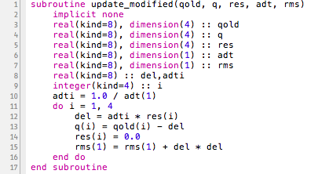
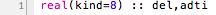
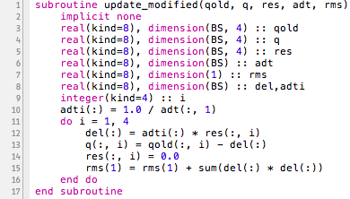
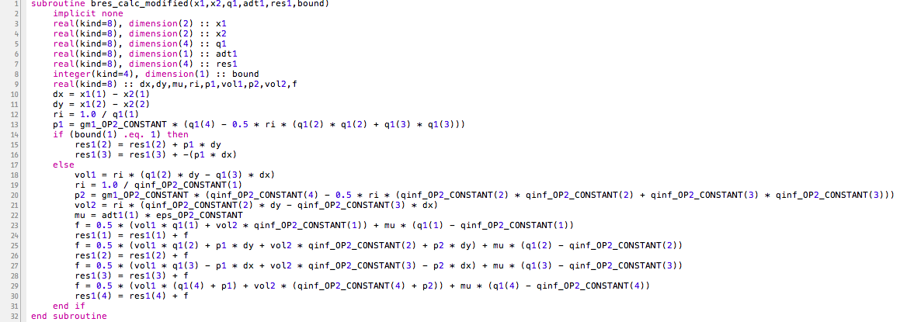
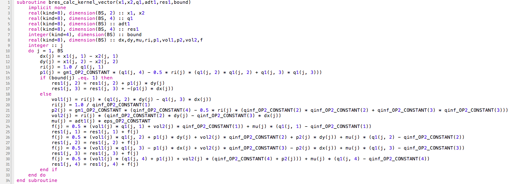
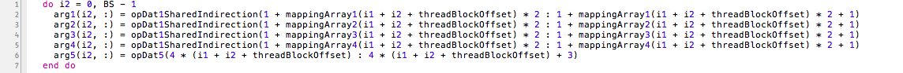

This document describes the process required to transform the original OP2 code into code which, when compiled using the fortran compiler with the -xAVX (or -xSSE) flag, will result in code which uses vectorized instructions rather than normal ones. This is done in order to hopefully achieve some rate of speedup of the original program.
The document will be divided into 3 parts; the first part concerns the actual transformations done to the code with relevant examples from rose_openmp_vector.F90. If you're just looking to implement the changes, this is the place to go. The second part talks about the current limitations of the vectorized program with relevant examples from the assembly code that rose_openmp_vector.F90 generates. Finally, part three presents the current results collected from executing airfoil, comparing both the vectorized and non-vectorized version of rose_openmp.F90.
Generally, what we aim to do is to tranform the code in such a way that the vectorization occurs across the different instances of execution of the user kernel, rather than within the user kernels themselves. This is done mostly for simplicity; doing it this way means that there is a mechanical way to transform the user kernels and the (non user) kernels which call the user kernels (yes, wrap your head around that) so that it behaves how we want it to. Also, there is no guarantee that the inside of the user kernels themselves contain vectorizable contents!
The first step in transforming the code is to transform the user kernel. There are two ways of doing this, one which works with any basic kernel which doesn't have any conditionals in it, and another which also supports conditionals. For the time being, I use the first method unless strictly necessary as it is both cleaner and in my experiences vectorizes with greater success. More will be said about this in the second section.
The first method entails transforming each instruction of the user kernel into a vectorized instruction, and as a consequence performing vector promotion on all the relevant variables (i.e. turning all scalars into vectors, vectors into matricies, etc.).
Variables that do not get promoted include:
To illustrate this process, I will transform the 'update' kernel found within airfoil. The original is as follows:
To transform an instruction to a vector instruction, simply add "(:)" to the end of each scalar variable, and transform each vector or matrix variable by adding ":" to the variable's first dimension.
So a statement such as this:
Would become:
The ":" is simply a fortran shorthand which represents all of the elements in that given dimension. So in the example above, each element of del is being assigned to its corresponding element of adti multiplied by its corresponding element of res.
Now, the variable declarations above must also be changed accordingly to account for the added dimension. This means declarations without a dimension such as these:
Become:
Where "BS" (Block Size) is the vector length, usually 4 or 8.
Variables that already have a dimension simply have another dimension added onto them (in the first dimension, for currently a precondition of vectorized instructions is that the data has to be contiguous), except for in the case that a variable is a "fake" vector. By design, if OP2 needs to pass a single value to a kernel, it will do so by passing it as a one-dimensional vector, in these cases instead of adding a dimension, the "dimension(1)" turns into "dimension(BS)".
Finally, in the case that a scalar global variable needs to be updated by vector values (such as "rms(1)" above), the correct reduction must be performed on the vector. Because above we would have:
the resulting vector given by "del(:) * del(:)" would have to be reduced by the "sum()" function like so:
After applying all these transformations to the code, the vector version of the user kernel should look like this:
The second method is similar to the first in the sense that the variables are vector promoted in the same way as before, and hence the declarations are changed in the exact same way. The difference lies in the fact that instead of vectorizing single instructions, we "batch" vectorize the instructions by looping over all of them, and hope that the intel compiler vectorizes them. The intel compiler supports this, and with simple examples this works well, however with more complicated examples it makes decisions which sometimes hinder the vectorization process. More will be said about this in the second section.
The reason to use this method is that currently, this is the way that intel supports vectorizing over conditionals as well (according to their vectorization guide). The only kernel in airfoil that requires this process is bres_calc:
Changing the variable declarations, the variables themselves (so to vector promote them) and encompassing the code with a loop that executes the code BS number of times, we have:
Now that we have seen how to transform the user kernels in such a way that they do operations over multiple iterations of the user kernel rather than one at a time, we need to look at how the (non-user) kernels need to be adjusted accordingly in order to feed the proper data in.
The trivial case is direct loops as the data is already organized in such a way that the content that needs to be calculated is already contiguous, and so it is only a case of changing the call to the user kernel to include more data.
In the version I have created however, there is a small difference; the code in fact is not contiguous and is in SoA format, whereas to have contiguous data we need data in AoS format (referring to the OpDats). To compensate for this, I'm performing an out of place transpose using the mkl library. I was told that the OP2 compiler can be told to give data in AoS format so that this step wouldn't be necessary, so ignore it when you see the code.
The case of indirect loops however requires slightly more work. In this case, a gather is required before the execution of the user kernel, and a scatter after the execution.
The process is very straightforward, first of all, vector variables must be created into which the needed data will be gathered. In the case of adt_calc_kernel, I create the variables "arg1" to "arg5", which correspond to the first 5 arguments taken by adt_calc_modified/adt_calc_kernel_vector (the 6th argument is a direct loop).
Note that the reason for which I have them 0-indexed is so that the indexing scheme is more compatible with OP2's indexing scheme, which makes the gathering and scattering code a bit cleaner.
From here, it is just a matter of copying in the relevant data in, calling vectorized user kernel on it, then scattering it back out again!
Another important thing to keep in mind is that, in the cases of res_calc and bres_calc, there is also code to do with colouring. Make sure that the map is updated by the correct amount. Instead of updating it with the shared indirection, update it with the relevant arg at every iteration.
As the document shows later on, overall, the vectorization process does produce faster code than the original, however, by inspecting the code generated by the compiler, it is clear that the code could still be performing better.
In this section, I will analyze the assembly code produced by each of teh user kernels to determine whether or not the assembly is actually using AVX instructions. It turns out that this is not always the case, and sometimes, AVX instructions are used, but on 128bit registers rather than 256bit registers.
All cases are compiled using -O3.
When compiled with a BS of 4 or 8, the intel compiler gives the following message for the only line of code present in save_soln: "loop was not vectorized: vectorization possible but seems inefficient.". This seems strange as the line of code is simply "qold(:, i) = q(:, i)" (first dimension is of size BS), which would seem like a perfect candidate for vectorization.
The intel documentation states that it is possible to force a vectorization to happen by using the !DIR$ SIMD directive. By using this directive above this line of code, the intel compiler says: "SIMD LOOP WAS VECTORIZED". However, if we look at the assembly code for this line, we get the following (BS of 4):
vmovupd is indeed the name of the instruction for the AVX mov, however, it is operating on the xmm (128 bit) registers twice instead of using the ymm (256 bit) register once. It is unclear as to why it decides to do this.
In the update kernel, only half of the vectorizable instructions vectorize successfully according to vector report generated by the compiler. Namely the first vector instruction, the second instruction and the penultimate instruction.
Looking at the assembly code, the lines of code which vectorized without an issue (the ones that the compiler reports as "LOOP WAS VECTORIZED") indeed do use the corresponding AVX instruction on 256 bit registers (ymm), just as we wanted.
The lines that don't vectorize instead